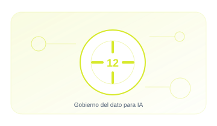

12 · PILAR
Gobierno del dato para IA
Garantizar calidad, legalidad, trazabilidad y protección de los datos usados por la IA.
EnfoqueTécnico, práctico y entendible
Contenido6 guías extensas y aplicables
Aplicable aOrganizaciones y sistemas reales

12.01 · GUÍA
Datos de entrenamiento
Gobierna fuentes. calidad. legitimidad. sesgo. minimización y linaje.
17–23 min+1.673 palabrasAbrir guía →
12.02 · GUÍA
Datos RAG
Controla documentos. permisos. actualización y retirada del conocimiento recuperable.
16–22 min+1.624 palabrasAbrir guía →
12.03 · GUÍA
Datos sintéticos
Usa datos generados sin asumir que son automáticamente seguros o representativos.
16–22 min+1.606 palabrasAbrir guía →
12.04 · GUÍA
PII en LLM
Reduce exposición de datos personales en prompts. contexto. logs y respuestas.
17–23 min+1.674 palabrasAbrir guía →
12.05 · GUÍA
Copyright y linaje
Documenta derechos. licencias. fuentes y transformaciones de contenido.
17–23 min+1.701 palabrasAbrir guía →
12.06 · GUÍA
Retención de datos
Define cuánto conservar prompts. respuestas. embeddings. memoria y logs.
16–22 min+1.646 palabrasAbrir guía →
01
OrigenControl y evidencia aplicable
02
CalidadControl y evidencia aplicable
03
AccesoControl y evidencia aplicable
04
UsoControl y evidencia aplicable
05
RetenciónControl y evidencia aplicable
Cada guía incluye explicación, implantación, controles, evidencias, errores habituales, métricas y referencias.